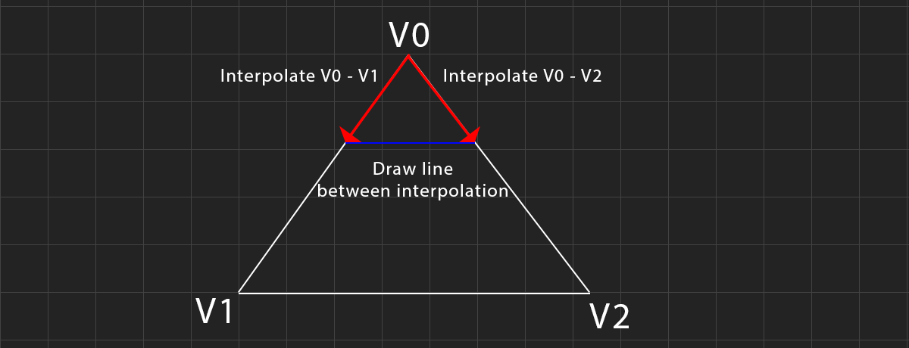
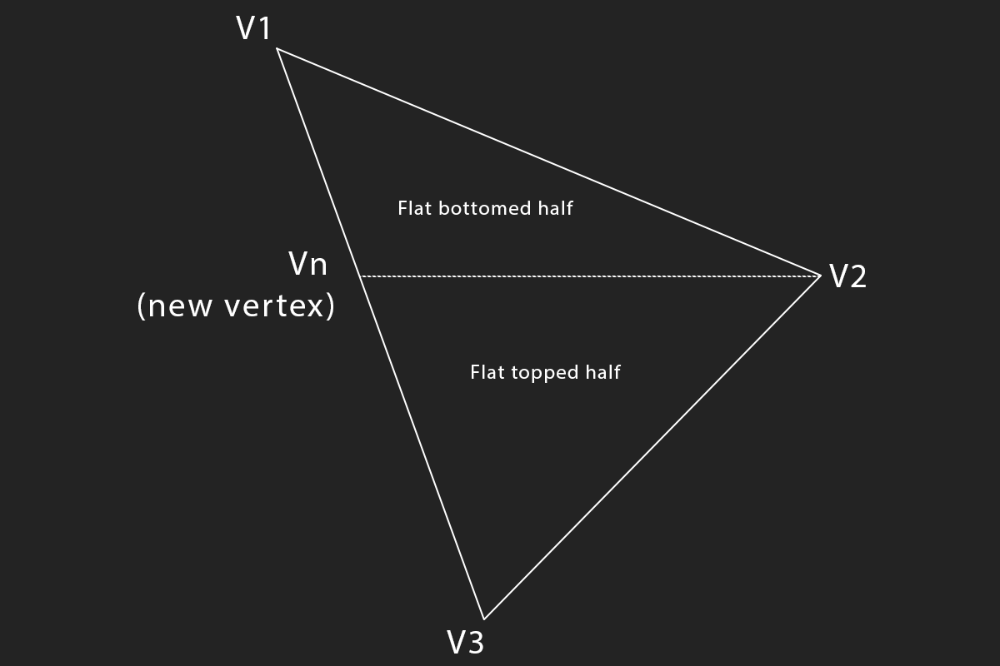

Drawing Triangles
Drawing a filled triangle is easy if you know how to draw a line. The algorithm presented in this blog to draw a triangle is an edge interpolation algorithm. The idea is simple, we treat a triangle as two lines, interpolate along both lines on the y axis, and draw a straight line between the interpolated points.
This works fine for triangles that have a flat top, or flat bottom, but what about triangles that dont? We can split such a triangle into two other triangles, one with a flat top and one with a flat bottom.
The triangle algorithm consists of two steps, first we split the triangle into two, then we rasterize each triangle. Splitting the triangle into two triangles keeps the render loop extreamly simple. These are the steps to follow:
- Sort vertices from top to bottom
- Split the triangle into two if needed
- For each scanline
- Calculate the x coordinates (\(x1\) & \(x2\)) of two the triangle sides.
- Draw horizontal line from \(x1\) to \(x2\)
Let's start with the simple DrawFlatTriangle function. This function assumes that vertex 2 and vertex 3 are horizontal. It uses a simple DDA to trace the left and right sides of the triangle. The code needs to check if the bottom or top of the triangle is flat, and increment or decrement y accordingly.
function DrawFlatTriangle(v1, v2, v3) {
let height = v2[1] - v1[1];
if (height == 0) {
return;
}
let dx_left = (v2[0] - v1[0]) / height;
let dx_right = (v3[0] - v1[0]) / height;
let cx_left = v1[0];
let cx_right = v1[0];
if (v1[1] < v2[1]) {
for (let y = v1[1]; y <= v2[1]; ++y) {
game_context.beginPath();
game_context.moveTo(cx_left, y);
game_context.lineTo(cx_right, y);
game_context.stroke();
cx_left += dx_left;
cx_right += dx_right;
}
}
else {
for (let y = v1[1]; y >= v2[1]; --y) {
game_context.beginPath();
game_context.moveTo(cx_left, y);
game_context.lineTo(cx_right, y);
game_context.stroke();
cx_left -= dx_left;
cx_right -= dx_right;
}
}
}
The DrawFlatTriangle function is not very robust, but it's not meant to be called directly. Instead, we will create a DrawTriangle function. This function will first sort all of the vertices top to bottom. Then, it checks if the triangle is flat topped, flat bottomed, or if it needs to be split, and it will call the DrawFlatTriangle function accordingly.
function DrawTriangle(v1, v2, v3) {
// Sort vertices top to bottom
if (v3[1] < v1[1]) {
let tmp = v3;
v3 = v1;
v1 = tmp;
}
if (v2[1] < v1[1]) {
let tmp = v2;
v2 = v1;
v1 = tmp;
}
if (v3[1] < v2[1]) {
let tmp = v3;
v3 = v2;
v2 = tmp;
}
if (v1[1] == v2[1]) { // Flat top
if (v1[0] < v2[0]) {
DrawFlatTriangle(v3, v2, v1);
}
else {
DrawFlatTriangle(v3, v1, v2);
}
}
else if (v2[1] == v3[1]) { // Flat bottom
if (v2[0] < v3[0]) {
DrawFlatTriangle(v1, v2, v3);
}
else {
DrawFlatTriangle(v1, v3, v2);
}
}
// Split triangle if it has no horizontal edges
// Assuming int's here, use epsilon if floats
// else if (v2[1] != v1[1] && v3[1] != v1[1] && v2[1] != v3[1]) {
else {
let ratio = (v2[1] - v1[1]) / (v3[1] - v1[1]);
let newX = (v3[0] - v1[0]) * ratio + v1[0];
// Draw the split sub-triangles
if (newX < v2[0]) {
DrawFlatTriangle(v1, [newX, v2[1]], v2);
DrawFlatTriangle(v3, v2, [newX, v2[1]]);
}
else {
DrawFlatTriangle(v1, v2, [newX, v2[1]]);
DrawFlatTriangle(v3, v2, [newX, v2[1]]);
}
}
}